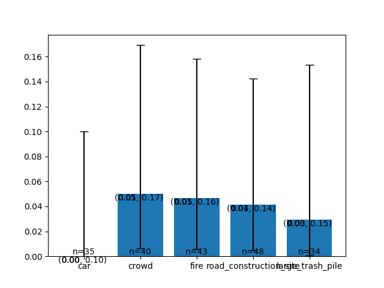
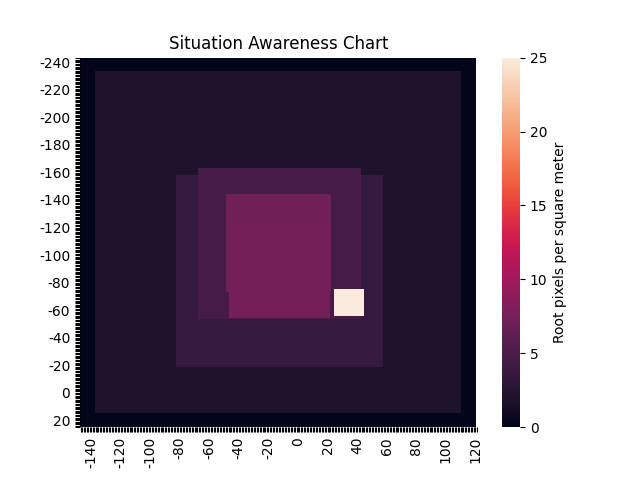
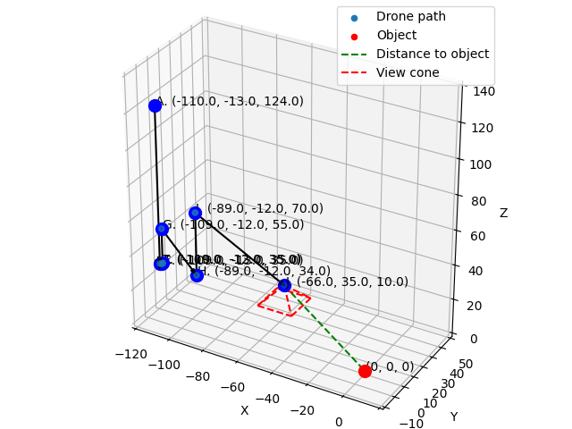

Result analysis
Alright, you've run FlySearch on model of your choice. You are probably interested in actually analysing your model's performance. This tutorial part is meant to help you with doing that.
Artifacts overview
By this point, you should have a log folder that looks like this:
you_run_name
└───0
│ │ agent_info.json
│ │ conversation.json
│ │ scenario_params.json
│ │ simple_conversation.json
│ │ 0.png
│ │ 1.png
│ │ 2.png
│ │ ...
│ │ 0_coords.txt
│ │ 1_coords.txt
│ │ 2_coords.txt
│ │ ...
│ │ object_bbox.txt
│ │ termination.txt
│
└───1
│ │ agent_info.json
│ │ conversation.json
│ │ scenario_params.json
│ │ simple_conversation.json
│ │ 0.png
│ │ 1.png
│ │ 2.png
│ │ ...
│ │ 0_coords.txt
│ │ 1_coords.txt
│ │ 2_coords.txt
│ │ ...
│ │ object_bbox.txt
│ │ termination.txt
│
...
Each of these subfolders is a folder containing information about a singular trajectory. Saved images are enumerated images sent to the drone, while files with coordinates indicate agent's position relative to the object being searched. For example, if you see coordinates like (0, 0, 100) you know that the agent is directly above the target at 100 meters altitude. There is also a scenario_params.json which describes the scenario configuration and allows a replication of a trajectory via mimicking (see examples at examples/mimic.sh and documentation in README.md and tutorials/00-script.md). There are also conversation.json and simple_conversation.json showcasing agent's interactions with benchmark.
There is also agent_info.json where custom agents may save their internal state. However, if you were using the simple_llm agent, this file can be safely ignored.
Generating a TeX document with trajectories
In the Appendix H of our paper we include example trajectories recorded in our benchmark. These allow to help researchers visually understand how models are interacting with the environment in a way that pure numbers cannot convey that well. This subsection is meant to guide you through creating such a visualisation on your own.
To do it, locate the analysis/report_generation/generate_appendix.py file. It contains a generate_report function that we recommend using to create such a visualisation.
Let's assume that you want to generate a report for model XYZ on FS-2 and that the run directory is all_logs/XYZ-FS2. You can then generate a TeX code for the run running a code like this:
with open("XYZ-FS2.tex", "w") as f:
generate_report(
model_displayname="XYZ",
path_dir=pathlib.Path("../../all_logs/"),
filter_func=lambda x: True,
file=f,
startfrom=0,
n=200,
subdir="XYZ-FS2",
overwrite=True
)
It will save the relevant TeX code to XYZ-FS2.tex and relevant images (figures and images that were sent to the agent) to images/XYZ-FS2. You can use it to add to your own TeX paper. If you just want to have a standalone report, you can use an example TeX main file (main.tex). It looks like this:
\documentclass[12pt, a4paper]{report}
\usepackage[margin=0.8in]{geometry}
\usepackage{dramatist}
\usepackage{graphicx}
\usepackage{enumitem}
\usepackage{parskip}
\usepackage{setspace}
\onehalfspacing
\setcounter{secnumdepth}{3}
\begin{document}
\tableofcontents
\chapter{Examples}
\input{XYZ-FS2}
\end{document}
Note that you will need to change the name of the argument passed to the \input command to match name of the .tex file you've generated.
You can then compile the document by doing:
set -e
pdflatex -interaction=nonstopmode -file-line-error -shell-escape --output-directory=build main.tex
pdflatex -interaction=nonstopmode -file-line-error -shell-escape --output-directory=build main.tex
or using premade script for that task (compile.sh):
the compilation result should be stored in the build/main.pdf file.
Calculating success rates
Being able to see trajectories directly, but analysing them at larger scales "by hand" is (obviously) impractical. As such, we offer premade classes meant to simplify the large-scale data analysis process for you.
Run class
The Run class is located in analysis/run.py file. It's only argument is a path to a specific trajectory (e.g. all_logs/your_run_name/5) and it's main purpose is to parse contents of the trajectory directory to represent them in an easy-to-use object.
Sidenote: Note that in this documentation we tend to differentiate between trajectories (i.e. single, independent agent flights) and runs (multiple trajectories). However, in code the Run class represents -- as stated before -- a trajectory. This doesn't really matter, but we inform about it to avoid unnecessary confusion.
Here is a simple example on how to use it (by accessing some of its properties):
import pathlib
from analysis import Run
def main():
run = Run(pathlib.Path("all_logs/GPT4o-FS2-City-Reckless1/5"))
print(run.start_position) # (-49.0, 25.0, 101.0)
print(run.object_type) # RED_SPORT_CAR
print(run.end_position) # (-150.0, -59.0, 6.0)
print(run.model_claimed) # True
print(run.get_comments()[0][:50]) # <Reasoning>There is a red car visible at the top l
print(run.get_object_bbox()) # (-67375.53, 36284.47, 57.88, -67026.71, 36755.36, 195.4)
print(run.forest_level) # False
# And so on
if __name__ == "__main__":
main()
You can also load all trajectories at once with help of the load_all_runs_from_a_dir function:
import pathlib
from analysis import load_all_runs_from_a_dir
def main():
trajectories = load_all_runs_from_a_dir(pathlib.Path("all_logs/GPT4o-FS2-City-Reckless1"))
run = trajectories[5]
print(run.start_position) # (-49.0, 25.0, 101.0)
print(run.object_type) # RED_SPORT_CAR
print(run.end_position) # (-150.0, -59.0, 6.0)
print(run.model_claimed) # True
print(run.get_comments()[0][:50]) # <Reasoning>There is a red car visible at the top l
print(run.get_object_bbox()) # (-67375.53, 36284.47, 57.88, -67026.71, 36755.36, 195.4)
print(run.forest_level) # False
# And so on
if __name__ == "__main__":
main()
RunAnalyser class
The main task of the RunAnalyser class is to check whether the success criterion was fulfilled.
import pathlib
from analysis import load_all_runs_from_a_dir, RunAnalyser
def main():
trajectories = load_all_runs_from_a_dir(pathlib.Path("all_logs/GPT4o-FS2-City-Reckless1"))
run = trajectories[5]
analyser = RunAnalyser(run)
print(analyser.success_criterion_satisfied(threshold=10, check_claimed=True)) # False
# Note that we don't use Euclidean distance in our success criterion,
# but RunAnalyser allows you to calculate it
print(analyser.get_euclidean_distance()) # 161.2978...
if __name__ == "__main__":
main()
CriterionPlotter class
This class takes in a list of Runs as an argument and can aggregate the results for you. We describe a few of its methods below.
aggregate_runs_per_function method
The signature of this method is: def aggregate_runs_per_function(self, fun: Callable, fil: Optional[Callable] = None):
And it returns dictionaries that look like this:
It is the first step when we are performing analysis of success rate per specific object classes (for example, when we want to see whether it's easier to search for a car or for a crowd).The first argument (fun) is a function that takes a Run as an argument and returns an object by which an aggregation should happen. For example, when we were aggregating results for the FlySearch paper in the city environment, we used an aggregation function like this:
def city_aggregation_function(run: Run):
object_type = str(run.object_type).lower()
if "car" in object_type:
return "car"
elif "pickup" in object_type:
return "car"
elif "truck" in object_type:
return "car"
return object_type
in order to merge all cars, pickups and trucks into one "car" class.
import pathlib
import json
from analysis import load_all_runs_from_a_dir, RunAnalyser, Run, CriterionPlotter
def main():
trajectories = load_all_runs_from_a_dir(pathlib.Path("all_logs/GPT4o-FS2-City-Reckless1"))
plotter = CriterionPlotter(trajectories)
def city_aggregation_function(run: Run):
object_type = str(run.object_type).lower()
if "car" in object_type:
return "car"
elif "pickup" in object_type:
return "car"
elif "truck" in object_type:
return "car"
return object_type
runs_aggregated_per_type = plotter.aggregate_runs_per_function(city_aggregation_function)
print(runs_aggregated_per_type.keys()) # dict_keys(['car', 'crowd', 'fire', 'road_construction_site', 'large_trash_pile'])
print(runs_aggregated_per_type["car"][0]) # analysis.run.Run object
if __name__ == "__main__":
main()
By itself, this function is not that useful -- but it becomes extremely useful when combined with the next method.
(Note: the second argument, fil is not that useful -- it's a function that takes in Run as an argument and returns a boolean -- if it's False then the run should be excluded from the analysis. By default, the value of this argument is None, which means that this function is lambda x: True -- i.e. no trajectories will be discarded.)
plot_accuracy_in_aggregated_runs method
The signature of this method is
def plot_accuracy_in_aggregated_runs(self, variable_to_runs: Dict, ax, success_criterion: Callable | None = None, threshold=10) -> Dict:
The first argument is the dictionary returned by the function above. For each of the dictionary values, success rates will be calculated independently, allowing you to get per-class success rates. The second argument is matplotlib ax, allowing you to visualise the results. The third argument allows you to customise your success criterion, which (by default) assumes 10 meter threshold and requires reporting of FOUND.
This function modifies the matplotlib ax and returns a dictionary with success rate statistics per aggregation class. Let's see an example:
import pathlib
import json
from matplotlib import pyplot as plt
from analysis import load_all_runs_from_a_dir, RunAnalyser, Run, CriterionPlotter
def main():
trajectories = load_all_runs_from_a_dir(pathlib.Path("all_logs/GPT4o-FS2-City-Reckless1"))
plotter = CriterionPlotter(trajectories)
def city_aggregation_function(run: Run):
object_type = str(run.object_type).lower()
if "car" in object_type:
return "car"
elif "pickup" in object_type:
return "car"
elif "truck" in object_type:
return "car"
return object_type
runs_aggregated_per_type = plotter.aggregate_runs_per_function(city_aggregation_function)
fig, ax = plt.subplots(nrows=1) # We will ignore it for now
stats = plotter.plot_accuracy_in_aggregated_runs(
runs_aggregated_per_type,
ax,
success_criterion=lambda run: RunAnalyser(run).success_criterion_satisfied(threshold=10, check_claimed=True)
# ^ We don't have to specify it in this case, since it will be done this way by default
# To get unclaimed stats, flip `check_claimed` to False
)
print(json.dumps(stats, indent=4))
if __name__ == "__main__":
main()
This code will print:
{
"car": {
"mean": 0.0,
"std": 0.0,
"sem": 0.0,
"conf_int": [
0.0,
0.1
],
"n": 35,
"total_successes": 0
},
"crowd": {
"mean": 0.05,
"std": 0.2179,
"sem": 0.03489912202260563,
"conf_int": [
0.0061,
0.1692
],
"n": 40,
"total_successes": 2
},
"fire": {
"mean": 0.0465,
"std": 0.2106,
"sem": 0.03249479679096614,
"conf_int": [
0.0057,
0.1581
],
"n": 43,
"total_successes": 2
},
"road_construction_site": {
"mean": 0.0417,
"std": 0.1998,
"sem": 0.02914766351555603,
"conf_int": [
0.0051,
0.1425
],
"n": 48,
"total_successes": 2
},
"large_trash_pile": {
"mean": 0.0294,
"std": 0.169,
"sem": 0.02941176470588235,
"conf_int": [
0.0007,
0.1533
],
"n": 34,
"total_successes": 1
}
}
What if you just want to see one general success rate, without dividing it by class? Well, you can just aggregate it differently -- for example like this:
This would yield:
{
"unaggregated": {
"mean": 0.035,
"std": 0.1838,
"sem": 0.013027801736688053,
"conf_int": [
0.0142,
0.0708
],
"n": 200,
"total_successes": 7
}
}
As stated before, you can also view a matplotlib plot. They don't look great, but they may serve as a perhaps-useful ad-hoc visualisation tool.

Note: The confidence intervals provided are 95% confidence intervals.
get_runs_aggregated_per_height_bin method
This function is a utility method that uses previously discussed aggregate_runs_per_function method to aggregate runs by their starting height. This is useful when analysing model's performance relative to "hardness" of a given scenario (as the higher starting points tend to be more problematic -- the higher you are, the smaller is the object you are looking for).
For example this:
trajectories = load_all_runs_from_a_dir(pathlib.Path("all_logs/GPT4o-CityNew"))
plotter = CriterionPlotter(trajectories)
runs_aggregated_per_height = plotter.get_runs_aggregated_per_height_bin()
fig, ax = plt.subplots(nrows=1)
stats = plotter.plot_accuracy_in_aggregated_runs(
runs_aggregated_per_height,
ax,
success_criterion=lambda run: RunAnalyser(run).success_criterion_satisfied(threshold=10, check_claimed=True)
)
print(json.dumps(stats, indent=4))
would give you:
{
"30 - 40": {
"mean": 0.6731,
"std": 0.4691,
"sem": 0.06568558183307435,
"conf_int": [
0.5289,
0.7967
],
"n": 52,
"total_successes": 35
},
"40 - 50": {
"mean": 0.4324,
"std": 0.4954,
"sem": 0.08256893144064578,
"conf_int": [
0.271,
0.6051
],
"n": 37,
"total_successes": 16
},
"50 - 60": {
"mean": 0.2609,
"std": 0.4391,
"sem": 0.06545849153992007,
"conf_int": [
0.1427,
0.4113
],
"n": 46,
"total_successes": 12
},
"60 - 70": {
"mean": 0.2,
"std": 0.4,
"sem": 0.06405126152203486,
"conf_int": [
0.0905,
0.3565
],
"n": 40,
"total_successes": 8
},
"70 - 80": {
"mean": 0.102,
"std": 0.3027,
"sem": 0.043691267274371184,
"conf_int": [
0.034,
0.2223
],
"n": 49,
"total_successes": 5
},
"80 - 90": {
"mean": 0.1,
"std": 0.3,
"sem": 0.048038446141526144,
"conf_int": [
0.0279,
0.2366
],
"n": 40,
"total_successes": 4
},
"90 - 100": {
"mean": 0.0571,
"std": 0.2321,
"sem": 0.039807459772527774,
"conf_int": [
0.007,
0.1916
],
"n": 35,
"total_successes": 2
},
"100 - 110": {
"mean": 0.0,
"std": 0.0,
"sem": 0.0,
"conf_int": [
0.0,
0.975
],
"n": 1,
"total_successes": 0
}
}
Cool charts you can make
You may have noticed that our per-trajectory reports contain charts that are meant to visualise how the trajectory "went". If you'd like to make one yourself, this section is for you.
In short, to make them you need to use the RunVisualiser class located in the analysis/run_visualiser.py file. Thankfully, it's pretty straightforward to use:
import pathlib
from matplotlib import pyplot as plt
from mpl_toolkits.mplot3d import Axes3D
from analysis import load_all_runs_from_a_dir, RunVisualiser
def main():
trajectories = load_all_runs_from_a_dir(pathlib.Path("all_logs/Gemma27b-FS2"))
run = trajectories[0]
visualiser = RunVisualiser(run)
fig, ax = plt.subplots()
visualiser.plot_situation_awareness_chart(ax)
plt.show()
fig = plt.figure()
ax = Axes3D(fig)
fig.add_axes(ax)
visualiser.plot(ax)
plt.show()
if __name__ == "__main__":
main()
This will generate following charts:


This concludes this part of our tutorial. If you would like to see more examples, you can check out different scripts in analysis/ directory. Those are scripts that we've used -- they may or may not be useful to you.